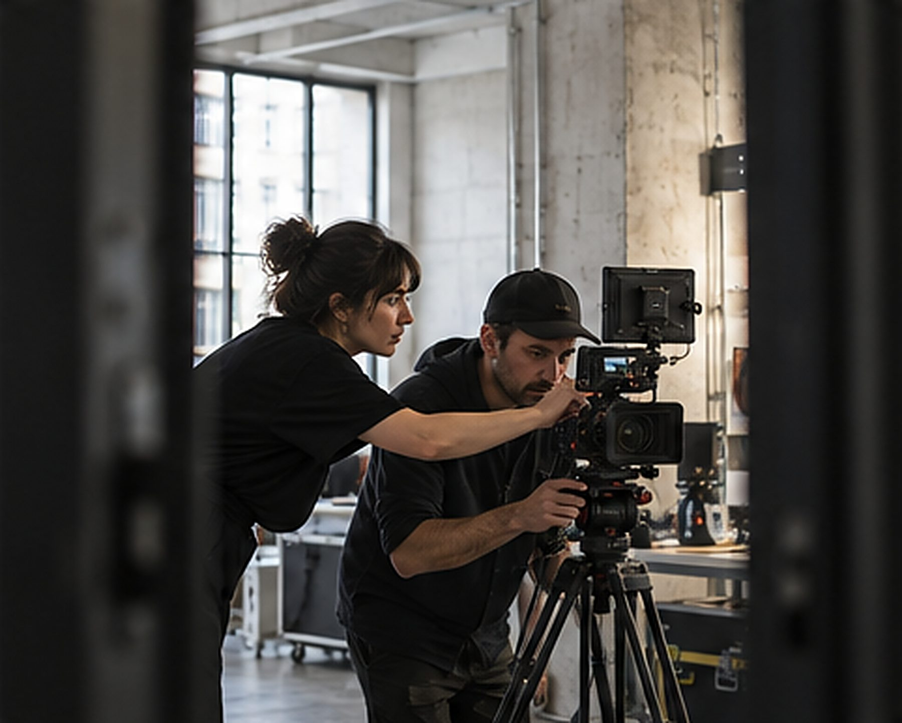
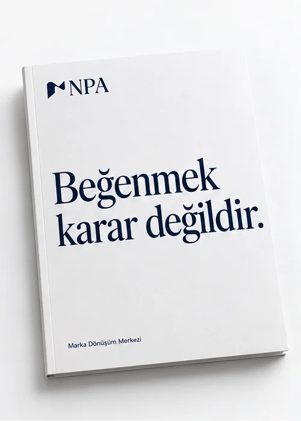
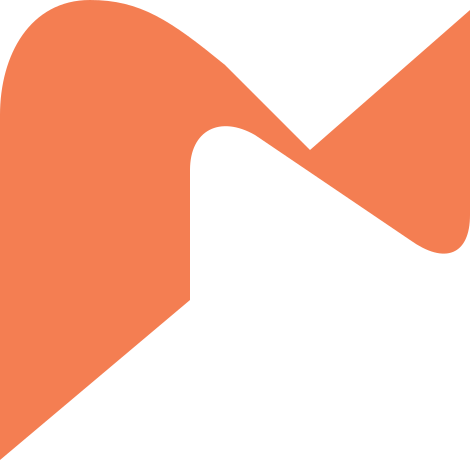

Keşif
Gözlem.
Markanın kendisini nasıl anlattığına, insanların onunla nasıl karşılaştığına ve deneyimde neler olduğuna bakarız.
Marka Dönüşüm Merkezi
Stratejik pazarlama ve bütünleşik iletişim. Markanın ihtiyacını netleştiriyor, ortak fikri ilgili mecralarda hayata geçiriyoruz.
Bir markanın görünüşü hakkında konuşurken soru kolayca Beğendik mi?
sorusuna döner. Oysa karşımızda yalnızca bir görüntü yoktur. Bir ihtiyaç, ulaşmak istediğimiz insanlar ve markanın verdiği söz vardır.
Her çalışma aynı sırayla ilerler.
Keşif
Markanın kendisini nasıl anlattığına, insanların onunla nasıl karşılaştığına ve deneyimde neler olduğuna bakarız.
Teşhis
Söylenen ile yapılan arasındaki farkı anlamaya çalışırız. Bulguları bir teşhiste toplar, öncelikleri belirleriz.
Çatı fikir
Markaya yön verecek ortak fikri geliştiririz. Sezgi ve yaratıcılık bu çalışmanın içindedir; bir önerinin neden doğru olabileceğini de konuşuruz.
Uygulama
Fikir ilgili uzmanlıklarda hayata geçer. Sonucu değerlendirirken başta koyduğumuz ölçütlere döneriz.
Dört atölye ayrı marka değildir. Aynı çatı fikre katkı veren uzmanlık alanlarıdır. Kapsam ihtiyaca göre belirlenir.

Markanın söyleyeceği şeyi yaratıcı fikre ve uygulamalara dönüştürür.

Markanın söylediğiyle yaptığı arasındaki tutarlılığı, ilgili paydaşları da dikkate alarak çalışıyoruz.

Ortak fikrin fiziksel ve dijital temaslarda nasıl deneyimleneceğini planlıyoruz.

İç iletişimi ve çalışan deneyimini, marka amacıyla birlikte değerlendiriyoruz.
Paketler işletmenin büyüklüğüne göre değil; işin amacına, kapsamına ve beklenen teslimlere göre kurulur. Tek bir hizmet, bir alt paket veya birleşik bir kapsam seçilebilir.
Bir markanın kimliğini, konumlandırmasını, pazarlama yönünü ve gerektiğinde kurum içi işleyişini tutarlı bir yapıya dönüştürmek.
Mevcut marka stratejisini belirli bir pazarlama, iletişim, itibar veya deneyim hedefine dönüştürmek.
Belirlenmiş bir marka veya iletişim ihtiyacını yaratıcı, teknik ve dijital çıktılara dönüştürmek.
İhtiyaç duyulan stratejik, yaratıcı ve iletişim hizmetlerini belirli bir dönem boyunca planlı ve koordineli biçimde yürütmek.
“Beğendim.”
Bu cümlenin yanına bir soru eklenebilir:
Hedeflediğimiz etkiyi destekliyor mu?

Üçü ayrı belirtilir. “Bilmiyoruz” denebilecek yerde kesinlik üretmeyiz.
Taahhüdümüzü kapsam, teslim tarihi ve değerlendirme ölçütleri üzerinden netleştiririz. Hedef ile sonuç ayrı tutulur.
Araştırma, değerlendirme ve üretimde yapay zekâ araçlarından yararlanıyoruz. Araçların çıktısını insanlar değerlendiriyor; stratejik karar ve son onayın sorumluluğu bizde.
Bu soruyla başlayalım. Kısa bir görüşmede ihtiyacı birlikte netleştirir, sonraki adımı ve tarihini belirleriz.
Keşif görüşmesi planlayın